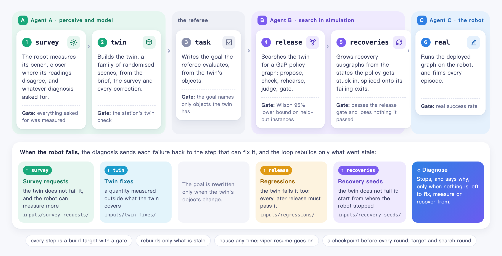
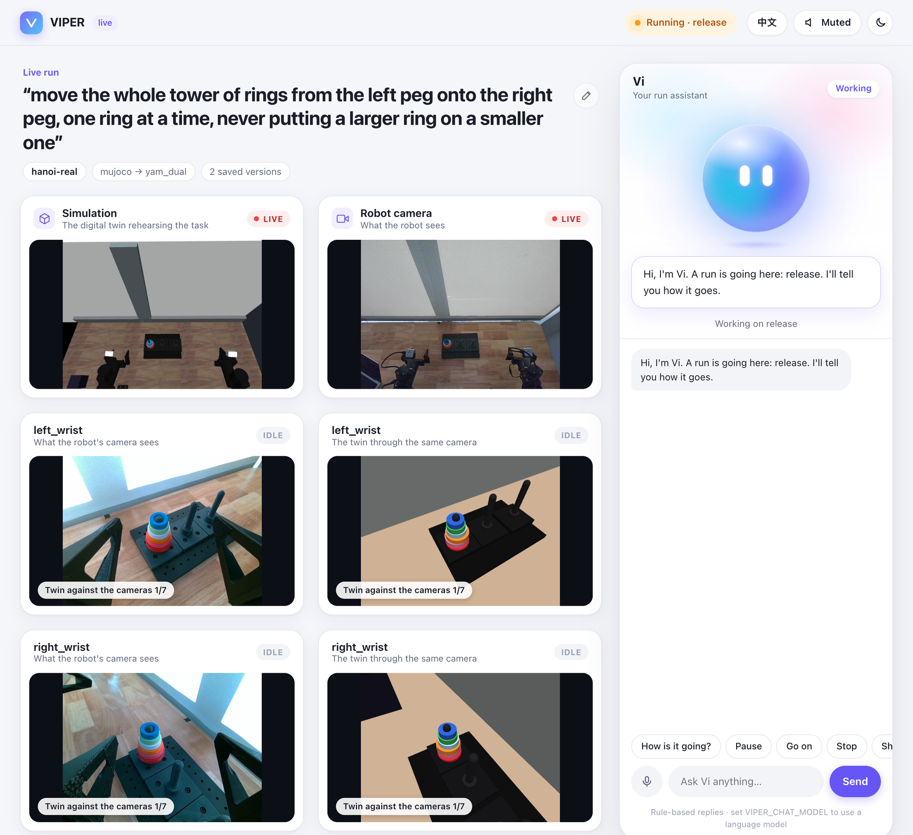

Using VIPER
VIPER is make for robot policies. A brief says what the task is, which simulator to search in and which robot to run on. VIPER builds six targets in order, each behind a gate. When the robot fails, the diagnosis sends each failure back to the stage that can fix it, rebuilds only what that made stale, and tries again. What it builds is a Graph-as-Policy (GaP) graph, the same one in simulation and on the robot.
- 1. The loop
- 2. Install
- 3. The offline demo
- 4. Everyday commands
- 5. Watching a run, and talking to Vi
- 6. Writing a brief
- 7. RoboSimStudio on a GPU host
- 8. Borrowing a skill from the hub
- 9. What a run directory holds
- 10. After the robot fails: the four routes
- 11. The benchmark suite
- 12. Extending VIPER
- 13. Troubleshooting
1. The loop

| Target | What it does | Gate |
|---|---|---|
survey |
The robot measures its bench before the twin is built, and more when asked | Everything asked for was measured |
twin |
Builds a family of randomised scenes from the brief, the survey and every fix | The simulation's twin check, and the reconstruction gate |
task |
Writes the goal from the objects the twin has | The goal names only objects the twin has |
release |
Searches the twin for a graph | Wilson 95% lower bound of success on holdout instances ≥ 0.8 |
recoveries |
Grows recovery subgraphs from the states the release gets stuck in, spliced onto its failure exits | The whole graph passes the release gate again and loses nothing the release passed |
real |
Runs the deployed graph on the robot | Success rate ≥ 0.8 |
A target's build key digests its version and the content of everything it
needs: the same key skips the build, a new one rebuilds it and everything
downstream. The diagnosis does one thing, append an entry under inputs/,
which makes the targets that need that input stale; the next round rebuilds
just those.
The twin's own loop: a view problem or a method problem
Active perception builds the twin; while the twin is not accurate enough, the
robot perceives again, before task or release start. A survey that keeps
what it saw returns views (each frame with its camera's name, size,
intrinsics [fx, fy, cx, cy] and pose [x, y, z, qw, qx, qy, qz] in OpenCV
axes, and each object's mask, depth and the quantities it was read for) and
readings (every reading of each quantity: value, doubt, camera, method). A
simulator that can look_twin renders the twin through each of those cameras,
and the twin's gate (viper/stages/look.py) reads every object in every view:
| Reading | Bar (default) |
|---|---|
| Mask overlap, IoU | ≥ 0.6 |
| Centre offset, mm at the object's depth (px without depth) | ≤ 10 mm (12 px) |
| Size ratio, square root of the areas | within 1.15x either way |
| Depth, the twin's median less the camera's | ≤ 10 mm |
It also checks the survey: readings of one quantity from two views that
disagree by more than spread (1) times their doubts summed, values outside
the ranges the task declares, and the checks the robot (survey_checks) or
the brief declares. Every reading goes to targets/twin/<key>/match.json and
the look sheet look.svg (each camera's frame, the twin's render, both
outlined, the readings taken through that camera, red where they disagree);
viper watch shows the sheet on its look feed and Vi says each round.
A failed gate is told apart before it is routed:
| Cause | Rule | Route | Bound |
|---|---|---|---|
| The comparison pins a value | the simulator's render says what the value must be | twin_fixes |
the loop's rounds |
| Method | readings of one quantity from two clear views disagree beyond their doubts; or the twin is off the same way (larger, smaller, nearer, farther, shifted alike in the world) in every clear view, two at least; or looking from more views left the object's miss at least 0.8 of what it was | perception_fixes: per quantity the robot's next method it has not tried, the one it replaces, the views, the numbers and the readings; the twin measures again from the survey's frames and the robot does not move |
method_rounds (2) |
| View | anything else: the object far (fewer than 64 px across), cut by the frame, hidden or seen at a grazing angle where the view says, seen clearly in fewer than two views, or failing in some clear views and not in others | survey_requests with a look per object: closer, then more views, through which cameras it disagreed |
look_rounds (2) |
A view is clear when none of the view rules holds for that object in it. A
robot that cannot remeasure gets a look for a method problem too, as before.
The ledger's measured events record which method measured each quantity the
twin was built from, and whether from the survey or from its frames again.
Seen from a few views, some of a bench stays uncertain, and the gate does not demand certainty. Its outcomes, in order:
| Outcome | When | What happens |
|---|---|---|
| Route | a cause above, while its input has rounds left | the twin is rebuilt from what comes back |
| Pass with ranges | readings disagree while the twin, built at their median, matches every camera within the bars; or, once nothing is left to route, a value still misses | each quantity becomes a range over its readings and doubts, its nominal value and the value the frames imply, clipped to the ranges the task declares: [lo, hi] for a number, the alternatives for a category (a colour). The twin is built again with {"ranges": ...} as its last fix, writes ranges.json, and its variants span them; the ledger says why (ranges) |
| Fail on structure | once nothing is left to route: an object the twin lacks, a value no range within its bounds can hold, or a declared check whose problem says kind = "structure" (a count, a support, an order) |
the gate fails and the loop stops, saying why |
A twin that carries ranges (from the survey, a fix, or a gate before) is compared at its nominal values; a miss that a value inside the range would close (the size or place the frame implies, within the bars) is explained by the range, not failed, and the look sheet says which range explained it.
viper/core/ranges.py is the representation every twin shares: spanning,
clip, union, contains, nominal, and variants(ranges, count, key),
the nominal variant and then seeded draws inside every range, the same for
the same key. A simulator draws its variants with it (cube_on_pad does); a
diagnosis passes categorical ranges over, as no reading lies outside a set of
colours.
The critic and the scenery: is the twin complete?
The metric compare measures the task's objects; it cannot see a table that
ends at a wall, an arm the twin left out, or a laptop on the bench. So each
round the gate also renders the twin through each real camera, puts the
camera's frame and the render side by side on the page (look/<camera>, the
round on it), and asks a vision-language model what differs
(viper/stages/critic.py).
What each critic is shown, per camera (Pair): the real frame, the twin's
render, the round, what the twin holds in words (objects and scenery), and
the metric compare's numbers through that camera. What it answers
(Critique), with where a pixel box [x0, y0, x1, y1] or point [x, y]
in the real frame:
{"matches": false,
"differences": [{"thing": "wall_back", "kind": "backdrop",
"where": [0, 0, 640, 260],
"evidence": "white panels in a grey frame; the twin has none",
"fix": {"backdrops": [{"name": "wall_back", "side": "back",
"rgb": [228, 226, 218]}]}}]}
kind is missing, extra, pose, size, colour, texture or
backdrop; fix is a scenery layer, {"remove": [names]}, {"measured":
{...}}, or a sentence when the picture gives no value. When several critics
are asked (Gemini, Astra), a difference several of them name is confirmed;
one only some name is downgraded and cannot block. Each difference then gets
the first route that holds, shown on the page and in the log:
| Route | When | What happens |
|---|---|---|
embodiment |
an arm, wrist, gripper or finger: the robot's configuration is proprioception, recorded with the frame, and its geometry its model, so never a perception problem | joints: the render did not use the joints recorded with the frame, so the twin is told them (twin_fixes); calibration: it did and the arm still lands elsewhere, so the arm's known points (base, wrist camera, fingertips) projected through the camera are compared with where they appear, and past calibration_px (20) the camera or base is measured again from the recorded frames (perception_fixes, calibrate); state: the fingers' opening and the like, explained. An arm the twin lacks is added at the recorded joints. Never blocks |
metric |
a pose or size of an object the metric compare measures | the metric outranks the critic and routes it itself |
dropped |
the twin draws the "missing" thing where the critic points, or the metric sees it | nothing |
explained |
a size or colour of a quantity the twin carries a range of | nothing |
twin_fixes |
the critic gave a value for what differs, and it applies: a colour, a thing to remove, a whole wall (a size or pose needs a place or size) |
the sim is updated directly: {"scenery": layer, "source": "critic"} |
perception_fixes |
the critic gave no such value (a wall's distance, a laptop's box, a peg's colour), and the frame the survey recorded through that camera holds it inside the item's where box |
measured from the recorded RGB-D frame, the robot still: {"measure": [{"thing", "group", "camera", "box", "what", "given"}]}; the twin runs viper/core/frames.py on it before it builds (else a method the robot has for scenery) |
survey_requests |
no recorded frame holds it (outside every view, no depth there, only a point to go on, or measured once and still wrong), and the robot can look now | active perception: the robot looks again, {"quantities": ["scenery"], "look": {thing: {"how": "scenery", "cameras", "why"}}}, and its survey returns what it read as scenery |
needs_look |
as above, but the robot cannot look now (replay, unpowered) | the views to take are listed (needs_look in match.json); the round waits for the robot |
unrouted |
nothing can settle it | listed |
Only a difference in something the task touches blocks: a task object, the
support it rests on, an obstacle in the workspace. Scenery appearance (wall
panels, blinds, light) and the embodiment are advisory: logged, told to the
twin when the critic gave a value, never blocking. The twin is rebuilt and
the critics asked again, at most critic_rounds (2) times. The gate passes
when every critic says every camera matches and the metrics pass; once the
rounds are spent, a blocking difference that needs a look leaves the twin
waiting for the robot (not failed), a blocking task object missing or extra
fails it on structure, and the rest passes, listed.
A round in the gate. The gate compares the metrics and settles their
outcome first; then, for a robot with critics, it asks them about each
camera the twin was rendered through. Each camera's pair goes to
targets/twin/<key>/look/<camera>.critic.svg and the page's look/<camera>
feed: the real frame left, the render right, the round in the title, each
difference outlined in its route's colour and listed below with its critics,
route and case (arm_right (missing, gemini+astra) -> embodiment/joints: the
robot itself; update the sim). The log has one line per difference with why.
The routed differences become at most one entry per input
("source": "critic", with the round and the differences it is for). While
the critics have rounds left (critic_rounds, counting the rounds that
routed) and each input has its own (look_rounds for looks,
method_rounds for measuring), the gate fails with outcome route and the
twin's loop appends them: a look rebuilds the survey first; the twin measures
each box in the survey's recorded frames before it builds
(scenery_measured.json) and passes calibrate to the robot's remeasure;
then it is rendered and criticised again. A route outranks a metric pass.
With nothing left to route, a blocking difference that needs a look makes the
outcome waiting: the loop stops at once without spending its rounds, and
viper run exits 4. match.json keeps the round under critic: round,
critics, matches, per camera the critiques and the routed differences
(each with route, case, because, entry, confirmed and blocking),
routes, needs_look and remaining. Vi says each round by route, in
English or Chinese: "Round 2: gemini and astra put the real frames beside the
twin's renders and found 2 differences: the sim lacked arm_right (missing,
joints), wall_back (backdrop): added. The twin is rebuilt and rendered again."
The fake bench runs every route in two rounds
(tests/unit_tests/simulation/test_fake.py).
Its robot takes scenery = true (or a layer over its bench, such as a cable
reel under the left arm) and said, what each critic says round by round
before the fake critic compares the pictures itself
(simulation/fake/scenery.py). In round 1
both critics call the back wall missing and give the whole wall, so it is
told to the sim; they call the right arm missing and the left arm's pose
wrong, both embodiment, drawn at the joints recorded with the frame; they
say the table's size is wrong without a number, so it is measured in the
recorded RGB-D frame inside its box; they point at the rim of a cable reel
the left arm hides, which no box measures, so the robot looks again and its
survey reads it; and one of them calls the laptop missing where the twin
draws it, which is dropped. The twin is rebuilt, and in round 2 both say it
matches.
Scenery is where those fixes land: the twin scene's scenery
(viper/core/scenery.py), in metres in the
twin's world frame, z up, colours as rgb 0-255:
{"support": {"name": "table", "x_m": [-0.6, 0.6], "y_m": [-0.3, 0.45], "top_m": 0.0,
"rgb": [176, 124, 82], "texture": "table.png", "texture_m": [0.3, 0.1]},
"backdrops": [{"name": "wall_back", "side": "back", "distance_m": 0.45,
"span_m": [-0.8, 0.8], "z_m": [0.0, 0.9], "rgb": [228, 226, 218]}],
"arms": [{"name": "left", "joints": [0.0, 1.2, -0.9, 0.0, 0.3, 0.0], "gripper": 0.4,
"base_m": [-0.33, -0.25, 0.0], "rgb": [24, 24, 24]},
{"name": "right", "joints": [0.0, 1.2, -0.9, 0.0, 0.3, 0.0], "base_m": [0.33, -0.25, 0.0],
"rgb": [24, 24, 24]}],
"distractors": [{"name": "laptop", "what": "laptop", "x_m": [-0.75, -0.45],
"y_m": [-0.35, -0.15], "z_m": [0.0, 0.02], "rgb": [40, 40, 44]}]}
backdrops stand on a side (back +y, front -y, right +x, left -x)
at distance_m from the origin. appearance holds how the task's own
objects look ({"board": {"rgb": [31, 38, 40]}}), and hidden the names
removed that the backend draws by itself (a goal marker). Scenery comes in
layers, each over the last: the brief's or the backend's default, the
survey's measured scenery, then each fix's {"scenery": layer}; a layer
updates fields, adds names, and removes names (scenery.of_fixes(base,
fixes)). A new thing a layer leaves without what it needs (a wall's side
and distance_m, a box's x_m, y_m, z_m) is named by
Scenery.lacks(layer) and measured, never guessed.
Measuring a box of a recorded frame
(viper/core/frames.py) fills scenery from the
photograph. colour is the median colour of the frame's pixels inside the
box, its edges left out. extent back-projects the depth inside the box
through the camera into the world: for a backdrop, the thinnest horizontal
axis of the points gives its side, their median along it the distance, and
their spread the span and height; for a box (a laptop), the points above the
surface it stands on give its extent; for the support, the points on its top
give its extent and height. On the Hanoi frame this measures the back wall
0.62 m away and the laptop at x -0.42 to -0.13 m, without moving the robot.
A robot gives the critics as vlm(prompt, images, provider) -> text and
critics, the providers to ask (its hub's vlm.query; keys stay in the
host's env file); one without vlm is not critiqued. It records with each
frame the joints of every arm (view["joints"]), says whether it can look
now (looks_now), and may say where the arms' known points appear
(view["points"]). For the frames to be measured, each view keeps its
colour frame (view["image"] as PNG or JPEG, or view["rgb"] when the
image is a drawing), its depth as a 16-bit PNG in millimetres
(view["depth"]), and its camera's lens and pose (camera["K"] and
camera["T"], world from camera, x right, y down, z forward; or
intrinsics and pose). A robot that measures scenery lists scenery in its survey's
can (and measures, for methods over the recorded frames) and returns
survey["scenery"]; all of it is listed in
../embodiments/README.md. A backend draws
scenery in look_twin and see_twin
(../simulation/README.md).
2. Install
VIPER needs Python 3.11 or 3.12 and uv. It runs on the standard library alone; each simulator runs in its own Python, which VIPER never imports.
git clone https://github.com/runtime-si/VIPER.git
cd VIPER
uv venv --python 3.11 && source .venv/bin/activate
uv pip install -e ".[test]"
viper parts
A run is built from parts, each in the folder of its role: a real robot in
embodiments/, a world standing in for one in benchmarks/, a physics backend
in simulation/, and a task with the authors that write its graphs in
tasks/. viper parts lists the installed ones, and what any spec gets wrong:
benchmark cube_suite A simulation built from the true bench plays the robot: a Panda puts a cube on a pad
benchmark libero A LIBERO task stands in for the robot: its own start states, judged by its own success test
benchmark toy The toy world stands in for the robot, its arm off by a bias the brief misses
simulation fake A toy cube-to-plate world in plain Python, for tests and the demo
simulation mujoco MuJoCo through robosuite: the twin is a LIBERO task's scene, opened from its task file
simulation pybullet PyBullet on the CPU: a Panda picks a cube by camera and places it on a pad
simulation robosimstudio RoboSimStudio on Newton: a Panda picks a cube by camera and places it on a pad
simulation sapien SAPIEN on PhysX 5: a Panda picks a cube by camera and places it on a pad
task pick_place Pick a thing up and put it somewhere, from an instruction in words
| Simulation | Engine | What else it needs |
|---|---|---|
fake |
plain Python | nothing; the demo and the tests |
robosimstudio |
RoboSimStudio on Newton (MuJoCo-Warp) | a GPU and a RoboSimStudio checkout with GaP |
pybullet |
PyBullet on the CPU | pybullet, numpy and GaP |
sapien |
SAPIEN 3 on PhysX 5 | sapien, pybullet_data, numpy, GaP and a GPU with Vulkan |
mujoco |
LIBERO's scenes on MuJoCo, through robosuite 1.4 | a LIBERO checkout, robosuite==1.4.1, MuJoCo, GaP and EGL (section 11) |
robosimstudio, pybullet and sapien stage one world, a Panda that finds a
cube by camera and puts it on a pad, with the same tool names, so one graph
runs on any of them and a brief may search in one and run on another. The
robot there is the cube_suite benchmark, real = "cube_suite:<simulation>":
the same simulator built from the true scene. The libero benchmark puts a
published benchmark in the robot's place, played by mujoco, run from its own
start states and judged by its own success test. No real robot ships yet;
embodiments/README.md is the interface one meets.
To run the tests:
uv run pytest -q tests
3. The offline demo
The fake simulation and the toy benchmark are a toy world in plain Python,
with a scripted author. The whole loop takes under a second:
viper demo --out runs/demo
The log, abridged:
INFO round 1 of 3
INFO building survey
INFO twin passed its gate tcp_bias_mm=0
INFO building release
INFO round 0: best is n0000 (seed), 68/100 on the gate
INFO round 1: best is n0003 (recovery), 94/100 on the gate
INFO release passed its gate lower_bound=0.8752 n=100 rate=0.94 successes=94
INFO building real
WARNING real: real success 0.65 is below 0.8
INFO routed to twin_fixes: tcp_bias_mm measured 6.509, twin covers [-2.5, 2.5]
INFO round 2 of 3
INFO survey is up to date
INFO building twin
INFO twin passed its gate tcp_bias_mm=6.509
INFO task is up to date
INFO building release
INFO n0005 from topology is invalid: calls sim.get_object_pose, which the robot and the twin do not both provide
INFO release passed its gate lower_bound=0.8137 n=100 rate=0.89 successes=89
INFO real passed its gate successes=20 n=20 rate=1
In order:
- First round. The twin assumes the tool point lands where it is sent. The policy it finds does 94/100 there and 65% on the robot.
- Diagnosis. The robot read the tool point's offset on every episode, a median of 6.509 mm, outside the twin's [-2.5, 2.5], so the twin gets a fix.
- Second round.
surveyandtaskdo not need the fix and are kept;twinis rebuilt at 6.509 mm andreleasesearches again. - The safety check. During the search the author proposes an edit that
calls
sim.get_object_pose, the simulator's ground truth. It is rejected before it runs, because the robot has no such tool. - The robot again. 20/20.
Then:
viper status runs/demo # every target's build and gate
viper show runs/demo # writes runs/demo/report/index.html
open runs/demo/report/index.html
4. Everyday commands
| Command | What it does |
|---|---|
viper run BRIEF --out DIR |
Builds a brief's targets, closing the loop when the robot fails |
viper run BRIEF --out DIR --until release |
Builds up to one target; the loop closes only at real |
viper resume DIR |
Builds again from the brief the run directory holds, skipping what is built |
viper resume DIR --brief NEW.toml |
Builds again from another brief, rebuilding only what it changed |
viper resume DIR --instruction "TASK" |
Builds again for another task, in words; the survey is kept (section 5) |
viper run BRIEF --out DIR --watch |
The same under a live page with Vi (section 5); demo and resume take it too |
viper watch DIR |
The live page over a run directory, running or not |
viper status DIR |
Every target's current build and gate, and the inputs |
viper show DIR |
Writes every build, gate, route, search tree and film to DIR/report/index.html |
viper export DIR --to PKG |
Writes the deployed policy and the whole history as a viper.package/1 |
viper import PKG --out DIR |
Loads a package into a run directory; viper resume DIR continues it |
viper import PKG --out DIR --brief OTHER.toml |
Another scene: carries over the policy alone, as a seed of the new run's search |
viper parts |
Lists the installed parts, and what each spec gets wrong |
viper hub search --index HUB --part NAME |
Lists the hub skills a simulation can run, or with --real a robot; --all adds the rest and why not |
viper hub lock GRAPH --index HUB |
Writes a graph's skills.lock |
viper hub publish DIR --to HUB/skills |
Writes a run's recoveries as hub skill bundles |
run and resume take --rounds N, the most rounds of the loop, 3 by
default; run, resume and demo take --instruction, the task in place of
the brief's. -v before any command logs debug messages.
Common patterns:
# Search in simulation up to the release, and look before going to the robot
viper run brief.toml --out runs/x --until release
viper show runs/x
viper resume runs/x # then close the loop
# Continue after an interruption
viper resume runs/x
# Change a setting in the brief and rebuild only what it touches
viper resume runs/x --brief brief.toml
# Give the run another task; the robot does not survey again
viper resume runs/x --instruction "put the cube in the bowl"
# Take this run's policy to another scene
viper export runs/x --to pkgs/x
viper import pkgs/x --out runs/y --brief other.toml
viper resume runs/y
After every round the robot failed, and when it ends, a run saves itself as a
package under DIR/versions/v0001, v0002, and so on; viper import loads
any of them.
5. Watching a run, and talking to Vi
--watch runs a command under a live page on http://127.0.0.1:8765/:
viper demo --out runs/demo --watch # the demo, paced to take about a minute
viper run brief.toml --out runs/x --watch # a run, with the page beside it
viper resume runs/x --watch # the same, going on from where it stopped
viper watch runs/x # the page over any run directory, running or not
viper watch runs/x --feed camera=http://robot:8080/stream.mjpg # with the robot's camera

The page shows, as they happen:
- the simulation: the twin rehearsing, one tile per instance of the batch in progress, each marked success or failure;
- the robot's camera: what the robot draws, a camera's MJPEG stream
(
--feed camera=URL, or Add a stream URL on the page), or this computer's webcam; - each of the robot's cameras beside the twin: one row per camera the
robot declares, the twin rendered from that camera's pose through its lens
on the left,
sim/<name>, and what the camera sees on the right,camera/<name>; - where the run is: the six targets, built, building, stale or failed, with their gate readings, the checkpoint the run is at, and the inputs the diagnosis has written;
- the success rate: one tile per episode, green or red, from the build in progress or the robot's last run;
- the search: the gate rate of the best graph each round with its Wilson bound, each edit tried and whether it passed screening;
- the details, one tab each: the graph being deployed with the failures counted at each node, where each cube started and ended on the bench, the films the simulator recorded, the routes the diagnosis took, and the log.
Beside it is Vi, who says what the run is doing as it does it (a round starts, a target is built, the search finds a better graph, an edit is rejected, the robot fails and why, the route the diagnosis takes) and takes requests, typed or spoken (the browser's speech, where it has one):
| Say | What happens |
|---|---|
| "how is it going" | Where the run is and the latest gate readings |
| "pause" | The run holds at its next checkpoint, keeping its process |
| "go on" | A held run goes on; a stopped one resumes |
| "stop" | The run stops at its next checkpoint, with what it built kept |
| "stop now" | The process is killed; the build in progress is lost |
| "only up to release" | Resumes with --until release |
| "10 real episodes", "8 search rounds", "real_episodes = 5" | Restarts from a brief with the setting changed; only what it touches is rebuilt |
| "task: put the cube in the bowl", or click the task at the top | Restarts with --instruction: the survey is kept, the task and what it changes are rebuilt |
| "why did it fail" | The diagnosis of every failed round |
| "what are regressions" | What a VIPER word means |
Changing the task. Click the task at the top of the page, or its pencil,
type the new one and press Run this task; or tell Vi "task: ...". The run
stops at its next checkpoint and resumes with the new instruction, as
viper resume DIR --instruction "..." does from a terminal. The survey never
reads the instruction, so the robot does not measure again. The task is
written again, the release and its recoveries are searched again for it,
and the robot runs again only if they deploy a different graph. A task the
robot cannot do stops at the gate that says why: on the toy world,
"put the cube in the bowl" fails the task's gate (the goal names objects
the twin lacks: ['bowl']), and "put the plate on the cube" fails the
release's referee self-test.
Where the page meets the run
The page and the run share nothing but files under DIR/live/, so a run
goes the same with or without a page, and a page can open on any run
directory, running or finished:

A checkpoint is a call to live.checkpoint at three places in the run:
before every round of the loop and before every target (viper/build.py),
and before every round of the search (viper/engine/search.py). It is where
anything you ask takes effect. Saying "pause" goes like this:
- Vi writes
{"want": "pause"}tolive/control.json; the page marks the checkpoint ahead as asked. - At its next checkpoint the run reads the file, logs
paused at round 2, target release, writespausedtolive/now.json, and waits, reading the file twice a second. Nothing is lost: the process, its search and its models stay as they are. - The page marks the checkpoint as held and Vi says where the run is holding. You can look at anything on the page meanwhile.
- "go on" writes
{"want": "run"}and the run carries on from the same line. "stop" writes{"want": "stop"}: the run raisesHalted, keeps every target it built, and exits with status 3; "go on" then resumes it withviper resume. A request that changes settings ("10 real episodes") or the task stops the run the same way and restarts it with the change, so only what the change touches is rebuilt.
A paused or stopped run says where in live/now.json. The run is a child of
the page in its own session and writes its log to DIR/live/run.log; Ctrl-C
on the page asks it to stop at the next checkpoint. Until a run is attached to
its directory (the command line attaches it) a checkpoint does nothing, so
code that calls the stages directly never waits.
The live views
A simulation or a robot draws a view with live.frame("sim", data, ".svg", **meta): the
latest picture goes to live/feeds/sim.frame, what it shows to
live/feeds/sim.json. Drawing costs time, so they draw only while
live.watched() says a page has read the run in the last ten seconds; a run
nobody watches draws nothing. The page asks for /feed/sim?after=<time>, and
the server holds the request until a newer frame arrives, so frames show as
soon as they are written without the page polling for pictures.
The toy world draws both views. PyBullet, SAPIEN and RoboSimStudio draw
their renders in their workers, which run as jobs on this machine or over
ssh; the frames a worker draws are copied back into the run's live/feeds/ as
they appear. The camera view takes, in the order the page prefers them: the
robot's frames, a stream URL, or this computer's webcam; when it has more
than one, a switch above the view picks.
Each camera the robot declares ([cameras.<name>] in its embodiment or
benchmark) has a row of its own below them: what it sees, feed
camera/<name>, beside the twin rendered from the same pose through the same
lens, feed sim/<name>. The publishing is VIPER's
(viper/core/cameras.py): a robot in this process
that can see(camera) is asked while it surveys and runs; a simulation that
can see_twin(twin, cameras) shows each twin as it is built; and a job
worker's bench is asked to see each camera after reset, after each tool call
and when an episode ends, writing live/<side>/<name>.jpg, which the executor
relays. While the reconstruction gate holds a twin against the cameras, it
shows each view it compares as a pair: the survey's picture on
camera/<name> and the twin's render of that view on sim/<name>, marked
with the round; a camera seen from several views shows the last of them on
both. A camera that cannot be read is skipped; watching never fails a run.
Each camera an embodiment or a benchmark declares ([cameras.<name>], with
how its driver reads it, its size, lens and pose) has two feeds of its own,
which the page shows side by side: camera/<name>, what the robot sees, and
sim/<name>, the twin from the same pose through the same lens. Nothing
about them is in a task's code. VIPER asks for the pictures
(viper/core/cameras.py and the job runner, viper/jobs/episode.py): a robot
in VIPER's process is asked to see(camera) a couple of times a second while
it surveys and runs; a world in a job worker, the robot's or the twin's, is
asked after reset, after each tool call and when an episode ends; and a twin
just built from the survey is rendered through every camera at once.
The page listens on 127.0.0.1 alone; to watch a GPU host, forward the port
(ssh -L 8765:127.0.0.1:8765 gpu) and open it locally.
Vi speaks English by default; --lang zh or VIPER_LANG=zh starts her in
Chinese, and the language button at the top of the page switches either way
at any time. To have a language model answer instead of the rules, name one
behind an OpenAI-compatible endpoint; Vi hands it the run's state and carries
out the actions it returns, and goes back to the rules when it fails:
export VIPER_CHAT_MODEL=gpt-4o-mini
export VIPER_CHAT_URL=https://api.openai.com/v1 # the default
export VIPER_CHAT_KEY=... # or OPENAI_API_KEY
6. Writing a brief
A brief is a TOML file; benchmarks/*/brief*.toml are examples.
instruction = "put the cube on the pad" # required: the task
task = "pick_place" # the task; its author is the one for the sim
sim = "robosimstudio" # required: the simulation to search in
real = "cube_suite:robosimstudio" # required: the robot, an embodiment or a benchmark
# embodiment = "panda" # optional: the robot's, else the real side's
# models = "my_pkg.authors:LlmAuthor" # optional: an author instead of the task's
# goal = "(once ...)" # optional: the goal, else a template's
[twin.cube] # the estimate of the scene, which the diagnosis corrects
size_mm = 50.0
[[stages]] # optional: the goal's stages, in order (section 10)
name = "grasp"
holds = "held(cube)" # a predicate over what the robot observes
by = ["pick_sg"] # the subgraphs that work towards it
[[stages]]
name = "place"
holds = ["on(cube, pad)", "clear(hand, cube)"]
by = ["place_sg"]
[settings]
seeds = 4
n_train = 48
n_holdout = 100
search_rounds = 12
real_episodes = 20
[sim_options] # where the simulator runs
python = "/root/viper-work/robosimstudio/.venv/bin/python"
workdir = "/root/viper-work/robosimstudio"
host = "gpu"
ssh_config = "~/.ssh/config"
remote_root = "/root/viper-work/jobs"
shards = 4
worlds = 25
[real_options]
python = "/root/viper-work/robosimstudio/.venv/bin/python"
workdir = "/root/viper-work/robosimstudio"
host = "gpu"
ssh_config = "~/.ssh/config"
remote_root = "/root/viper-work/jobs"
shards = 10
[real_options.truth.cube] # the true scene on the stand-in robot
size_mm = 26.0
[settings], each with its default:
| Key | Default | Meaning |
|---|---|---|
seeds |
3 | Seeds the author writes |
n_train / n_holdout |
96 / 100 | Train and holdout instances |
search_rounds / width / batch |
16 / 4 / 24 | Most search rounds, candidates per round, train instances per round |
release_tau / release_min_n |
0.8 / 100 | The release gate: least Wilson lower bound, fewest gate runs |
recovery_least |
3 | Fewest stuck states at one node worth a recovery; one from the robot is always enough |
recovery_rounds / recovery_tau |
8 / 0.5 | Recovery search rounds, and the bound a kept recovery must reach |
recovery_variants |
3 | Varied copies of each stuck state, for train and for holdout |
recovery_probes |
48 | Disturbed runs of the release, 0 for none |
recovery_held_out |
24 | Disturbed runs never searched from, reported apart, 0 for none |
recovery_floor |
0.5 | The Wilson lower bound, on a gap's own runs, a recovery needs to join the portfolio |
real_episodes / real_tau |
20 / 0.8 | Episodes on the robot, and the rate that passes |
real_online |
0 | Most choices the robot's online monitor takes per episode, true for 2; 0 runs the graph whole (section 10) |
real_answer |
"" |
Who that monitor asks when none of its own choices holds: "file" or "model"; nobody by default (section 10) |
real_answer_s |
30 | Longest it waits for an answer, in seconds |
look_rounds / method_rounds |
2 / 2 | Most times the reconstruction gate sends the robot to look again, and has the twin measure the survey's frames again with another method, in one build |
critic_rounds |
2 | Most rounds the reconstruction gate's critics route what they see, in one build |
seed |
0 | The search's random seed |
[sim_options] and [real_options]:
| Key | Meaning |
|---|---|
python, workdir |
The simulator's interpreter and working directory, on the machine that runs jobs |
host, ssh_config |
The SSH host that runs jobs; none runs them here |
hosts, gpus |
A pool of hosts that split a job's shards; GPUs shards take in turn |
shards |
Worker processes a job is split across |
worlds |
rss simulator only: worlds each process steps as one batch |
remote_root, keep_remote, timeout_s |
Where job directories go on the host, whether to keep them, the longest a job may take |
retries |
Times the instances a job left without a result, as when a worker died, run again before the job fails (1) |
env |
The workers' environment variables, taken literally, with no $VAR expansion |
skills |
Hub checkouts on the machine that runs jobs |
policies |
{name = {url = "..."}}, checkpoint servers (not wired yet; see section 8) |
truth |
Stand-in robot only: the true scene, over the default one |
surveys, film |
Robot only: what it may measure; episodes of each execution to film |
[[stages]] stage the goal when the author does not: the cube-on-pad
library author stages its template goal as above, and the toy library's
author stages its own. A predicate is a fact ("held(cube)", among the
state's facts or a key of it that is true), a list of predicates that must
all hold, or {"all"|"any": [...]}, {"not": p}, a comparison
{"lt"|"le"|"gt"|"ge"|"eq"|"ne": [a, b]} of values {"get": "cube.2"} read
from the state, or {"near": [a, b], "within": d}
(viper/engine/staged.py).
Other tables: [randomize] (variants, the scenes a twin draws from, 8 by
default; tcp_spread_mm, how far each moves the tool point, 1.5 by default),
[disturb] (what goes wrong in probe runs, by default a grasp that lets go in
half of them; an empty table disturbs nothing), [hub] (section 8) and
[look], the reconstruction gate over the robot's and simulator's own look
tables:
[look]
iou = 0.6 # the bars every object meets in every view
offset_mm = 10.0
size = 1.15
depth_mm = 10.0
spread = 1.0 # doubts two readings of a quantity may disagree by
blocks = true # false: report the match, never fail the twin on it
checks = ["my_pkg.checks:rings_fit_the_stack"]
objects = { peg = { size = 1.3 } }
ranges = { ring_count = [6, 6] }
tolerance = { ring_mm = 1.0 } # the doubt of a reading that carries none
viewing = { near_px = 64, occluded = 0.3, grazing_deg = 60, shrink = 0.8, agree = 0.7 }
7. RoboSimStudio on a GPU host
The GPU host needs a RoboSimStudio checkout with its virtual environment
and GaP, such as /root/viper-work/robosimstudio. VIPER copies each job
directory there and runs worker.py in that environment.
This machine needs an SSH host called gpu in ~/.ssh/config, which a
brief's host = "gpu" names:
Host gpu
HostName <address>
Port <port>
User root
IdentityFile ~/.ssh/<your key>
ServerAliveInterval 30
ControlMaster auto
ControlPath /tmp/gpu_ssh_%C
ControlPersist 10m
Once ssh gpu true passes without a password:
viper run benchmarks/cube_suite/brief.robosimstudio.toml --out runs/rss
The brief estimates a 50 mm cube; the stand-in robot's is 26 mm. The first release passes in the twin and fails on the robot, the robot's camera measures the cube, the twin is rebuilt, and the second release passes on the robot: 10 to 20 minutes on one RTX 4080 SUPER.
Run long runs inside tmux, so that closing the terminal does not stop them;
viper resume runs/rss continues one that stopped.
8. Borrowing a skill from the hub
RoboSkillHub is the catalog of
skills. benchmarks/cube_suite/brief.hub.toml lets the search borrow its
verifying-grasps: after the pick it lifts the cube a little, finds it with
SAM3 in a wrist camera, and checks that it rose with the hand. The overhead
camera is blocked by the hand by then, so the rss scene has a wrist camera.
What it needs:
- A hub checkout on this machine, whose
index.jsonVIPER reads: the brief'sindex = "../Runtime_Robo_Skill_Lab", beside VIPER. - A hub checkout on the GPU host, the brief's
skills = ["/root/autodl-tmp/hub"], from which the skill's scripts and tool bundles run. - SAM3's weights.
facebook/sam3is gated: a Hugging Face token with access downloads them into the host's Hugging Face cache, from which the workers load them offline. - The geometry bundle's environment, synced in the host checkout's
tools/geometry.
What can the simulation run?
viper hub search --index ../Runtime_Robo_Skill_Lab --part robosimstudio \
--embodiment panda --serves sam3 --serves geometry --stage verify
2 of 3 bundles fit robosimstudio
verifying-grasps skill verify verified,not_held,reached,missed,held,empty,unknown
verifying-placement skill verify verified,not_placed
The hub's part of the brief:
[hub]
index = "../Runtime_Robo_Skill_Lab"
embodiment = "panda"
serves = ["sam3", "geometry"]
[sim_options]
skills = ["/root/autodl-tmp/hub"]
[sim_options.env]
PATH = "/root/.local/bin:/usr/local/sbin:/usr/local/bin:/usr/sbin:/usr/bin:/sbin:/bin"
UV_CACHE_DIR = "/root/autodl-tmp/uv-cache"
HF_HUB_CACHE = "/root/autodl-tmp/hf-hub"
HF_HUB_OFFLINE = "1"
UV_OFFLINE = "1"
UV_NO_SYNC = "1"
ROBOSIMSTUDIO_SEGMENTATION_BACKEND = "sam3"
[real_options] takes the same skills and env, since the deployed graph
runs the skill on the robot too.
viper run benchmarks/cube_suite/brief.hub.toml --out runs/rss-hub
It takes about 19 minutes on one RTX 4080 SUPER. The first release borrows the
verifier and fails on the robot's 26 mm cube; the twin is rebuilt from the
measured 26.5 mm; the second release is again the seed that borrows it, 20/20
on the robot with every pick verified.
targets/release/<key>/skills.lock pins verifying-grasps, sam3 and
geometry to their content digests.
About borrowing:
- A seed borrows a skill as a subgraph whose
skillnames it; the hub is never edited. - The checks before a candidate runs rule out a borrowed skill the simulation cannot run, such as one that needs a tool or a tool bundle it lacks.
- A checkpoint, such as π0.5 or a model fine-tuned elsewhere, is meant to be a
GaP node that talks to a policy server, named by
policies. The hub already judges which checkpoints have a server, andpoliciesreachesjob.json, but the rss worker does not pass it to GaP yet.
A skill for a gap
When the robot gets stuck, recoveries sorts its failures into gaps
(section 10) and asks the hub, for each, what recovers from it. The ranking
is the hub's own, its roboskillhub command (the index checkout's
.venv/bin/roboskillhub, else the one on PATH):
roboskillhub search "put the cube on the pad" --tier camera_only -k 10 --json \
--embodiment panda --stage recover,execute \
--failure "place place_sg verify object not on target, object on bench"
The query is the task's instruction; the stages are recover and the stage
of the subgraph blamed, from its manifest; the failure words are the stages
the gap's runs failed at, the subgraphs blamed, and the gap's facts read as
words (!on(?object, ?target) reads "object not on target"). Of the ranked
skills, the run keeps those viper hub search would keep: run on a camera,
the brief's embodiment, every tool both the simulation and the robot or a
served bundle provide, and a subgraph that takes no input. The two best are
offered to the gap as recoveries that borrow the skill as a subgraph,
followed by the release's own way on from the failure; they are scored on
the gap's runs beside the task's own chains. Whatever is used lands in
skills.lock. Without a [hub] table, nothing is searched.
recoveries.json records, per gap, what was ranked and what was kept.
9. What a run directory holds
runs/<name>/
inputs/brief/ the brief
inputs/survey_requests/ what the diagnosis asked the robot to measure
inputs/twin_fixes/ corrections measured on the robot
inputs/perception_fixes/ other methods the twin measures the survey's frames with
inputs/regressions/ real failures the twin reproduces, which every later release must pass
inputs/recovery_seeds/ where real failures the twin does not reproduce got stuck
inputs/seeds/ more policies to search from, such as an imported package's
targets/<target>/<key>/ one directory per build, never changed once written
state.json the current build of each target
ledger.jsonl every input, build, gate and route, in order
versions/v0001/ ... the saved versions
report/index.html what viper show writes
live/ what the live page reads: log.jsonl, now.json (where the run is),
control.json (pause or stop), run.log, chat.jsonl (Vi's conversation)
The files you will look at most:
| File | What it holds |
|---|---|
targets/release/<key>/graph/ |
The policy: workflow.json (nodes, edges, subgraphs, routes), params.json (each tunable input's range and step), scripts/ |
targets/release/<key>/release.json |
Which candidate won, its lineage and its gate |
targets/release/<key>/search/tree.json |
The search tree: which edit wrote each candidate, and how it fared |
targets/release/<key>/skills.lock |
The hub bundles the policy runs, at their digests |
targets/recoveries/<key>/graph/ |
The deployed graph: the release with its recoveries |
targets/recoveries/<key>/portfolio/ |
The recoveries indexed by the state they start from (section 10) |
targets/recoveries/<key>/recoveries.json |
The gaps, the variants tried for each, the hub's offers, and the held-out runs before and after |
targets/real/<key>/rollouts.json |
Every episode on the robot: success, the node blamed, the observations, start and end states, and, run online, the monitor's decisions |
targets/real/<key>/deployed.json, online.json |
Which build, graph and portfolio the robot ran; run online, what the monitor saw and chose (section 10) |
targets/twin/<key>/match.json, look.svg |
The reconstruction gate's readings per object and camera, and its look sheet |
targets/twin/<key>/measured.json |
What the twin measured again from the survey's frames, when a perception fix asked |
10. After the robot fails: the four routes
A failure on the robot means the twin differs from the robot, or the policy
was never tried in that situation, or both. Each cause is fixed in a different
stage, and starting over is slow and learns nothing. The diagnosis
(viper/stages/diagnose.py) asks a few questions in turn and sends each
failure where it can be fixed.

twin_fixes: the twin has a number wrong
When. The robot records what it measures on every episode
(observations): the cube's size as its camera reads it, the depth noise, the
tool point's offset. The twin randomises each quantity over a range
(twin/<key>/support.json). When the median reading lies outside that range,
the twin is wrong.
What is written. The median, and how far the readings spread (doubt).
The demo's:
{"measured": {"tcp_bias_mm": 6.509}, "doubt": {"tcp_bias_mm": 1.1456}, "real": "ef77440484e935d6"}
What is rebuilt. twin, from the measurement, now randomised around it
(a cube's size over the measurement ± max(3 × doubt, 1 mm)). release searches
again, with the previous release among its seeds. A quantity that is not in
twin/facts.json, a cube's size or the depth noise, leaves task alone; a
tool-point offset is a fact, so task is rebuilt, to the same goal.
Why it comes alone. Replaying failures in a twin that is wrong tells nothing, so a diagnosis that finds a fix returns only the fix and leaves the rest to the next round.
Examples. In the demo, the twin covers [-2.5, 2.5] and the robot measures
6.509 mm. In the size_blind benchmark, the twin covers [45, 55] and the robot
measures a 25.99 mm cube; after the fix, the second release does 20/20.
regressions: the twin is right, the policy was not tried there
When. With the twin's numbers right, each failed episode's start state, such as where the cube was and which way it faced, is replayed in the twin with the deployed graph. When the twin fails too, the twin already holds the situation; the search's train and holdout instances just missed it, or met it too rarely.
What is written. The start state and where it failed, such as
{"instance": "real/7", "state": {...}, "blame": "pick_sg/locate"}.
What is rebuilt. Each entry becomes a fixed instance, regression/<k>,
that joins every train batch and every gate of every later search, so no later
release can pass without it and the policy cannot forget it. release,
recoveries and real are rebuilt. A state is routed once.
Example. None of the benchmarks has needed one yet: the train and holdout instances cover the spawn region well. A typical case, for illustration: a cube in a far corner of the spawn region, rarely drawn among 100 holdout instances, fails on the robot and fails again in the twin's replay, and so becomes a regression instance.
recovery_seeds: the twin does not fail, but the robot said where it stopped
When. The twin's replay succeeds where the robot failed: the robot differs
from the twin in something the twin does not model, such as a grasp that slips,
other friction, or a tool point that lands off. When the robot reported the
state it gave up in (end_state: the arm's joints, the cube's pose, the
gripper), that state is where a recovery starts.
What is written. That state and where it failed. One from the
slip_reactive benchmark, where the cube slipped in transport and fell beside
the pad, so placing failed its check:
{"blame": "place_sg/verify", "instance": "real/1",
"state": {"arm": [...], "cube": [0.02579, -0.09174, 0.01299, 1.55334], "fingers": 0.04, "grip": 0.04}}
What is rebuilt. recoveries and real only; the release is kept.
recoveries sorts the stuck states into gaps by what was observed in them
(below), and searches from them, and from varied copies of them, for a chain
that picks the cube up again and places it, and splices it onto the failure
exit of placing. An episode that does not fail there runs the release
unchanged.
Example. In slip_reactive the twin makes nothing slip, so only the robot
finds the slips: 12/20 on the first run, 8 stuck states become where recoveries
start, and 20/20 on the second.
survey_requests: the twin does not fail, so measure what has not been
When. Again a failure the twin does not reproduce. Some quantities are
measured only by moving the arm, such as the tool point's offset, read by
reaching to a few points and seeing by camera where the hand arrived, so the
survey measures them only when asked. When the robot can measure such a
quantity and has not, the diagnosis asks.
What is written. The quantities, such as
{"quantities": ["tcp_bias_mm"], "real": "..."}.
What is rebuilt. survey, where the robot measures; then twin from what
it found; then task, release and the rest.
Examples. In the bias benchmark the tool point lands 35 mm off in y, which
the camera does not see. The first run does 0/20, and the twin reproduces none
of 8 failures, so the diagnosis asks for tcp_bias_mm. Three reaches measure
33.2 mm, the twin is rebuilt with that offset, the author aims every planning
node 33.2 mm the other way, and the second run does 20/20. The same failures
were also routed as recovery seeds that round. In slip_reactive the same
request measured 0, which ruled the offset out, and the recoveries fixed the
rest.
Stage by stage: S, G, K and execution
A staged goal (section 6) says how far each episode got. The robot, or the
simulation, reports
what it observed after each top-level node of the graph and at the end (a
rollout's checkpoints); each episode, in the twin's gate runs and on the
robot, is judged on them: a stage is reached at the first checkpoint, no
earlier than its predecessor's, where its predicate holds, and the last stage
must still hold at the end. A side that reports nothing still places a
failed episode by the subgraph it was blamed on and the stages' by. The
rollout records reached, the stages in order, and failed_stage.
Before routing, the diagnosis compares each stage on the robot with the twin's
gate runs of the deployed release: of the episodes that reached the stage
before it, how many reached this one, robot a1/n1 against twin a2/n2, by a
one-sided two-proportion test (viper.core.stats.two_prop_p). Each stage the
robot fails gets a finding (viper/stages/findings.py):
| Finding | When | What it does to the routes |
|---|---|---|
| S | The robot reaches the stage less often than the twin, p < 0.05: the twin cannot show what the robot met there | A twin fix, if a measurement explains it; else the robot is asked to survey what it can, even when the replay reproduces the failures |
| G | It fails alike in both, and a tunable input (params.json) acts on the subgraphs it fails in |
Its failures are replayed and become regressions, as above |
| K | It fails alike in both and no tunable input acts on it: a skill gap no search over inputs closes | Its failures go to recovery_seeds from where they stopped, without a replay, and the ledger records a skill_gap with the hub's recovery skills the simulation can run |
| execution | The robot did not run episodes through: a refused command, a camera with no frame, a crashed worker (a rollout's fault) |
Nothing: they say nothing about the policy, and are left out of every count |
Every route carries the finding of the stage its episode failed at, in its
value ("stage", "finding") and its reason, and the stages entry of
ledger.jsonl holds the whole table, which the report and the live page's
Diagnosis tab show. In the demo, grasping is an S, robot 13/20 against twin
95/100, p < 0.0001, behind the twin fix:
INFO stage by stage: grasp: S, robot 13/20, twin 95/100, p=0.0000
Gaps, manifests and the portfolio
A recovery is searched for a gap: what a failed episode observed that no
successful one did. The simulation's checkpoints are facts, held(cube),
on(cube, pad), clear(hand, cube), and the task's roles (in task.json)
name what each thing is to the task, so held(cube) reads held(?object)
and the same gap is found whichever object the task names:
{"roles": {"cube": "object", "pad": "target"}}
At each checkpoint, a fact the run could have observed is either there or
not (!held(?object)). A failed episode's gap is the first checkpoint where
it observed something no successful episode observed at that checkpoint;
failures with the same new facts are one gap. A failure that never differs
from a success is unexplained: no recovery is searched for it. In slip,
the twin's slips fall into two gaps: the cube dropped on its way to the pad,
and the cube dropped before the pick had ended:
INFO gap !on(?object, ?target)+on(?object, bench): 13 failed runs, first seen after place
INFO gap !held(?object)+clear(hand, ?object)+on(?object, bench): 2 failed runs, first seen after pick
Manifests say what each subgraph needs and does, in manifests.json
beside the graph's workflow.json. The task's author writes them; the
cube's:
{
"pick_sg": {"needs": ["!held(?object)"], "gives": ["held(?object)"],
"clears": ["on(?object, bench)", "on(?object, ?target)"], "stage": "execute"},
"place_sg": {"needs": ["held(?object)"], "gives": ["on(?object, ?target)"],
"clears": ["held(?object)"], "stage": "execute"}
}
A subgraph with no manifest needs its inputs known and gives its outputs.
From the gap's state, a search over the manifests finds the shortest chains,
up to depth subgraphs, that undo the gap's facts, and the nodes further on
in the graph the chain can hand back to: a node whose manifest the chain's
result satisfies and from which the goal is still reached. A chain that would
hand back to the node that failed, or to one that leads back to it, takes
copies of the nodes up to the end instead, so a recovery never loops. For the
dropped cube, the plan is pick_sg; it would hand back to place, which
failed, so the chain is pick_sg > place_sg, both copied, and ends the task.
With no manifests, the chains are copies of the release's tail, as before:
INFO variant at place: pick_sg > place_sg then done (manifest, splice): 16/16, lower 0.81
INFO variant at place: place_sg then done (splice): 0/16, lower 0.00
With a [hub] table in the brief, every gap is also searched on the hub
(section 8). The task's own chains, the hub's skills and the release's tails
are all scored on the gap's own runs; the search starts from the best, and
the whole graph is gated again.
The portfolio. Each variant that did best on a gap, with a Wilson lower
bound above recovery_floor, is kept, indexed by the gap's facts: in
targets/recoveries/<key>/portfolio/, portfolio.json lists each entry's
guard (the gap's facts), where it starts (at), its chain, where it hands
back (back), what offered it (manifest, hub:<skill>, splice, joined
by + when several offered the same graph) and its numbers, and a folder per
entry holds a graph entered at the recovery's first node. An entry's id is a
digest of its guard, its graph and where it hands back, and the portfolio's
version goes up when its entries change.
viper.policy.portfolio.load(...).lookup(facts) finds the recoveries whose
guards hold in a state, the best first.
recovery_held_out disturbed runs are never searched from: they run the
release and then the deployed graph, and their numbers are reported apart
from the probes the search saw. In slip, the 24 held-out runs went from 16
to 21 (the three left are the cube dropped before the pick ended, a gap of 2
runs, below recovery_least); in LIBERO's alphabet_soup (section 11), where
the gap is !in(?object, ?target) after placing and the chain looks again,
picks and places, from 12 to 24.
Online: a recovery or a resume in the same episode
All of the above learns between builds: a failed episode is diagnosed, and
the next build does better. With real_online in the brief's [settings]
(true for two choices per episode, a number for more; off by default), the
robot also acts within the episode. It runs the deployed graph one top-level
node at a time (viper/jobs/online.py): GaP cannot
pause a workflow, so each node is one gap.execute on the episode's own
connector, given what the nodes before it output. Between two nodes a monitor
reads the robot's facts in the task's roles, and a trigger stops the graph's
own way on:
- exit: the node ended on an exit the graph sends to a failure end, or raised with nowhere to go;
- needs: the next node's manifest needs do not hold, such as a cube that
fell from the hand on the way to
place.
The monitor then looks up the situation, the node and the facts, and takes the first choice that holds:
- finish: the goal's facts, those that held at the end of every successful gate run, hold already; on to the success end;
- recover: a portfolio entry whose guard holds and whose chain, by the manifests, ends where the goal holds, the best validated first; its graph runs from its first node;
- resume: a node of the release's nominal path from which the rest, by the manifests, ends where the goal holds, the fewest left first. What the nodes before the trigger output counts as unknown, so a pick that needs to know where the cube is resumes at the look before it.
The nodes that follow check the choice: a node whose needs do not hold is a
trigger again. A choice is not taken twice in one situation, an episode takes
at most real_online of them, and with none left the graph goes its own way.
A graph that forks, or has top-level nodes other than subgraphs and ends,
runs whole, and the episode says why (online_refused). Each node's GaP
trace is kept apart and the traces are merged into the episode's one
dag_trace.json, which the blame reads as before.
Every trigger is a decision, kept in the episode's row of rollouts.json
under online: where it was met, what the monitor saw, the facts, what it
chose, what came of it, and the world state it was met in, so choices can be
compared from that state later. online.json beside it counts the episodes
that met a trigger and those of them that still succeeded, and what was seen
and chosen most; the report shows each decision, and Vi says what the monitor
saw and chose. Every real run, online or not, writes deployed.json, the
release index: which build and graph the robot ran, and the portfolio's
version and digest.
In the cube suite's slip_online, which is slip_reactive run online, 7 of
the first 20 episodes dropped the cube on the way to place; each resumed
at pick, from where the cube lay, and the first release passed 20 of 20.
Offline, the same robot passed 13 of 20, and the second release, with a
recovery searched from the states they stopped in, 20 of 20: online saves
the 7 episodes and the round. In LIBERO's alphabet_soup_slip_online
(section 11), 10 of the first 25 episodes dropped the can in the carry, each
resumed at the look before the pick, and the first release passed 25 of 25,
and 25 of 25 held out, 10 of those resumed as well; offline, 15 of the first
25 passed. A choice does not fix what fails every time: in bias, run
online, all 20 episodes resumed at pick, missed again in the same
situation and ended at the failure end, and the survey the diagnosis asks
for between builds is what passes 20 of 20. Where the release already holds
a recovery for a slip, as in slip, its graph catches the slip and nothing
triggers.
The monitor's own choices read only the facts and the manifests. Three more hooks let a run do what they cannot, each the same for every task:
- What only the robot sees. A bench (or a robot's worker) with
anomalies()returns, after each node,[{"name", "detail", "soft"}]: a slipping grip, a move that settled a few millimetres short. One that is notsoftis a trigger,anomaly, even after a good exit; a soft one is only kept in the checkpoint. Which readings are anomalies is the robot's or the task's, never VIPER's. - An answer. With
real_answer, when none of the monitor's choices holds, it asks:"file"writesonline/asks/NNN_request.jsonin the job and readsNNN_reply.jsonbeside it, waiting at mostreal_answer_s;"model"asks an OpenAI-compatible chat model at$VIPER_ONLINE_URL(model$VIPER_ONLINE_MODEL, key$VIPER_ONLINE_KEY, set in the worker'senv), told the task'sonline_brieffromgoal.jsonwhen it has one. The reply is a local change, never code: set a tunable input inside itsparams.jsonrange, insert top-level steps whose manifest needs hold one after another, resume at a node, or stop. It is checked before anything runs and refused, with its reasons, when it does not hold; inputs it set go back when the node it was asked at fails again. - What waits for the robot. An input
params.jsonmarks"guarded": "<check>"(with the"default"at which it waits for none) is one a twin cannot show the risk of: no search, offline or online, moves it, and a graph that holds it off its default is not deployed unless the robot'schecks_passed()names the check. A robot withpreflight(graph)is asked before the first episode, and a refusal keeps the graph off it. Either way the real build fails withnot deployed:and why.
A failed real episode run online is a recovery seed from the state its first trigger was met in, not from where it ended, with what the monitor saw and tried there, so the next recoveries start where the release first went wrong.
When the loop stops
The loop stops, recording why in a stopped entry of ledger.jsonl (which
viper show also shows; viper status shows the last gate that failed), when:
- every failed episode was an execution fault: the robot needs fixing, not the policy;
- the twin reproduces none of the failures, none reported where it stopped, no stage is a skill gap, and the robot has nothing left to measure: the robot differs from the twin in something nothing measures; or
- every failure has been routed before, and the round has nothing new.
Example. bias_blind lands 35 mm off like bias, on a robot that cannot
reach to measure. Recoveries from where it got stuck pick again with the same
offset and miss again, and after three rounds the loop stops with
real success 0.00 is below 0.8; the diagnosis has nothing new to route.
In short
| Route | When | Rebuilds | Benchmarks that take it |
|---|---|---|---|
twin_fixes |
A measurement lies outside the twin's range | the twin and what follows | size_blind, noise_blind, the demo |
regressions |
The twin's replay fails too | release, recoveries, real | none yet |
recovery_seeds |
The twin's replay succeeds, and the robot said where it stopped | recoveries, real | slip_reactive, bias |
survey_requests |
The twin's replay succeeds, and the robot can measure more | the survey and what follows | bias, slip_reactive |
11. The benchmark suite
benchmarks/suites/cube_suite.toml holds one brief per gap between the twin and the
robot, each beside a twin of it with one capability turned off.
cp benchmarks/host.example.toml benchmarks/host.toml # name your host
python benchmarks/run.py --out runs/bench --host benchmarks/host.toml
cat runs/bench/results.md
The nine scenarios run one after another in about an hour; the latest results are in the README.
LIBERO-Object as the robot
LIBERO gives each task
fifty start states and a success test. The libero benchmark puts a task in
the robot's place: real runs the policy from the benchmark's start states,
and LIBERO's own test judges every episode. The twin is the same task's scene
from placements LIBERO samples afresh, so the search never sees a start state
the robot is scored on. Neither side hands the policy a pose: it reads a
camera's depth and the simulator's per-pixel labels, which stand in for a
detector, and finds every object from them, then looks again from the wrist
camera once the hand is over the object. Those labels are LIBERO's
ground-truth segmentation, and the twin is opened from the task's own BDDL
file, not rebuilt from what the robot's cameras see; a mode that perceives
from RGB alone and reconstructs the twin is in progress. The twin's probes let the grasp go in
the carry, so every task also searches a recovery before the robot runs.
The worker needs a Python of its own on the GPU host, with LIBERO, robosuite 1.4.1, MuJoCo and GaP:
git clone --depth 1 https://github.com/Lifelong-Robot-Learning/LIBERO.git
uv venv .venv -p 3.11
uv pip install -p .venv --index-url https://download.pytorch.org/whl/cpu torch
uv pip install -p .venv "numpy<2" robosuite==1.4.1 mujoco==3.1.6 bddl==1.0.1 \
easydict gym==0.25.2 future cloudpickle matplotlib "imageio[ffmpeg]" \
opencv-python-headless pyyaml scipy msgpack msgpack-numpy httpx
uv pip install -p .venv --no-deps -e LIBERO <gap>/gap-core <gap>
LIBERO asks for its paths on the terminal the first time it is imported, which
a worker cannot answer; write ~/.libero/config.yaml first:
benchmark_root: <LIBERO>/libero/libero
bddl_files: <LIBERO>/libero/libero/bddl_files
init_states: <LIBERO>/libero/libero/init_files
datasets: <LIBERO>/datasets
assets: <LIBERO>/libero/libero/assets
If import libero.libero still fails, put the checkout's path in a .pth
file in the environment's site-packages. Then, on this machine:
cp benchmarks/host.libero.example.toml benchmarks/host.libero.toml # the host and its Python
python benchmarks/run.py --suite benchmarks/suites/libero.toml --out runs/libero \
--host benchmarks/host.libero.toml
cat runs/libero/results.md
Each of the ten LIBERO-Object tasks runs the loop with the robot on start
states 0 to 24. When the loop ends, the deployed policy runs start states 25
to 49, which no build saw: the held-out count. Three more scenarios make the
benchmark differ from the twin: alphabet_soup_slip lets the grasp go in the
carry in 40% of the robot's episodes, alphabet_soup_slip_reactive does
the same with a twin that disturbs nothing, so only the robot's failures can
teach the loop, and alphabet_soup_slip_online runs that robot online
(section 10). One scenario takes about seven minutes on one RTX 4080 SUPER
with 16 CPU cores, the ten tasks and the first two slips about 85; the
cameras render through EGL, which MUJOCO_GL=egl in the host table selects. The latest numbers are in the
README.
benchmarks/libero/brief.example.toml is one of the tasks as a brief of its
own.
LIBERO-PRO's perturbations as the robot
LIBERO-PRO runs LIBERO's tasks in a
changed world. benchmarks/suites/libero_pro.toml takes three of its perturbations
of LIBERO-Object, all ten tasks under each: swap, where the object and
another trade the places they start in; object, where the object and the
basket are other kinds of them, such as a red cream cheese, a bigger alphabet
soup and a red basket; and lan, where the instruction is reworded, such as
"grab cream cheese and put into basket". The twin stays the original task's
scene, so only the robot is changed: the first round of real runs is the
policy built without seeing the change, and the rounds after it are the loop's
answer to what failed there.
A swap moves only where the camera finds things. The labels name an object as
the robot's scene does, and where none is the name asked for, the one label
that is a kind of it stands for it, as a detector asked for the basket finds
the red one. A reworded instruction finds its task by the words that tell it
from the suite's other tasks, and the author reads the goal from the words. An
object of another size is what this setup cannot follow: the twin is opened
from the original task's file and the robot measures nothing, so the twin
keeps the original object and the twin_fixes route has nothing to correct.
LIBERO-PRO is a LIBERO checkout with the new objects' classes and meshes; its release puts each perturbed suite's BDDL and start states on Hugging Face. The worker keeps the Python above, and the host table puts LIBERO-PRO ahead of LIBERO on its path with a LIBERO config of its own:
git clone https://github.com/Zxy-MLlab/LIBERO-PRO.git
hf download zhouxueyang/LIBERO-Pro --repo-type dataset --local-dir pro \
--include "bddl_files/libero_object_*/*" "init_files/libero_object_*/*"
cp -r pro/bddl_files/* LIBERO-PRO/libero/libero/bddl_files/
cp -r pro/init_files/* LIBERO-PRO/libero/libero/init_files/
mkdir libero-pro-config # its config.yaml as above, every path in LIBERO-PRO
cp benchmarks/host.libero_pro.example.toml benchmarks/host.libero_pro.toml
python benchmarks/run.py --suite benchmarks/suites/libero_pro.toml --out runs/libero_pro \
--host benchmarks/host.libero_pro.toml
This is not the pipeline's perception: both sides read the simulator's
per-pixel labels, and the twin is opened from the task's file rather than
rebuilt from what the robot's RGB cameras see, so its numbers are not the
pipeline's and none are published. A run stopped after 3 of the 30 scenarios
gave, with that ground-truth perception: alphabet_soup_swap 25/25 and 25/25
held out; alphabet_soup_lan 25/25 and 25/25 held out; alphabet_soup_object
0/25 in each of three rounds, every episode failing at pick_sg/down, since
the twin still holds the original can while the robot faces
bigger_alphabet_soup_1, and 0/25 held out. A smoke run of the cream cheese's
three perturbations passed all three, 25/25 and 25/25 held out each.
12. Extending VIPER
A language-model author. A class with the two protocols of
viper/models.py, named in the brief as
models = "my_pkg.authors:LlmAuthor":
class LlmAuthor:
edit_kinds = ("script", "recovery", "topology") # the structural edits it writes
def write_task(self, brief, facts):
"""Return {"instruction", "goal", "objects"}, the goal in the task language."""
def seed(self, task, facts, out, index):
"""Write the index-th seed graph into the empty directory out. facts has
objects and support, and skills with a hub."""
def edit(self, graph, *, kind, failures):
"""Edit graph, a copy of the parent, in place; False when there is no edit."""
A new robot, benchmark, simulation or task. Each is a folder of its
role, with a spec, <kind>.toml, that says what a policy may call; viper
parts lists the installed ones and what each spec gets wrong. The folder's
README says what goes in it:
embodiments/<name>/, a real robot:embodiment.tomlwith its arms, tools, joints, cameras and model, and a driver. A robot of several arms names each arm's toolsrobot.<arm>.<tool>, the same tools for every arm; an author puts a one-armed graph or subgraph on an arm withviper.policy.graph.on_arm; given the graph's folder, its scripts'tool("robot.<tool>")calls are put on the arm too, in a copy of each script beside it. Each[cameras.<name>]says how the driver reads a frame, its size, its lens and where it sits; that is all a robot does for the live page.benchmarks/<name>/, a world standing in for the robot:benchmark.tomlwith the embodiment it has, the simulations that play it and its cameras, and a robot that implementsexecute, and may addsurveyandsurveys.simulation/<name>/, a physics backend:simulation.tomlwith the robots its world loads and its tools,[sim] toolsbeing its own ground truth, and a simulator that implementsbuild_twin,check_twin,check_goalandrehearse, and may addfilm,starts_from_states,varyandsee_twin. A bench of the shared job loop (viper/jobs/episode.py) addscheckpoint(), what it observes now, for a staged goal, setsfaultwhen an episode cannot run through, and addssee(camera), which the loop shows on<side>/<name>while a page watches.tasks/<name>/, what to do:task.toml, and a library per world with the author that writes its goal and graphs.- Facts and manifests. For gaps (section 10), a checkpoint's state
carries
facts, such as["held(cube)", "on(cube, bench)"]; the task'stask.jsonnames each thing'sroles; and the seed graph'smanifests.jsonsays what each subgraphneeds,givesandclears.tasks/pick_place/cube/author.pywrites both.
A robot, an embodiment's driver or a benchmark's, gets the reconstruction
gate from a survey that returns views and readings; one whose survey
takes looks is told how to look again; survey_checks declares its
consistency checks, each survey -> [{"why", "quantities", "objects",
"route"}] (route "method" when another look cannot help); measures,
{quantity: [method, ...]} best first, and remeasure(survey, frames,
methods, out), which measures the kept frames again with those methods and
without moving, open the method route. A simulator adds look_twin(twin,
views, out), the twin rendered through each view's camera, each object's
mask and depth, in the views' form, and pins per object when the render
fixes a value. The toy benchmark's robot and the fake simulation do all of it
(simulation/fake/look.py).
The protocols are in viper/parts.py. simulation/pybullet/ is the shortest
simulation to start from: it runs a worker through job directories, so only
job.json and results-*.jsonl cross between VIPER and the simulator.
13. Troubleshooting
ssh: Could not resolve hostname gpu. ~/.ssh/config has no Host gpu.
Add the block in section 7, or point the brief's ssh_config at a file that
has one.
The geometry bundle fails with uv: command not found. A non-interactive
SSH login has a short PATH. Spell PATH out in [sim_options.env], with the
directory uv is in; env is taken literally and does not expand $PATH.
uv sync hangs while syncing the geometry environment. It is cloning
GaP's submodules, several GB of them. Export the pinned requirements in the
hub checkout with
uv export --frozen --no-hashes --no-emit-package graph-as-policy-core,
install them into tools/geometry/.venv, then install a local gap-core.
SAM3 reaches for the network, or quietly falls back to colour matching.
Set HF_HUB_CACHE to the cache that holds the weights, HF_HUB_OFFLINE=1,
and ROBOSIMSTUDIO_SEGMENTATION_BACKEND=sam3, so that a failure fails loudly.
The verifier always routes not_held. The hand blocks the overhead camera.
The verifier looks through the eye_in_hand wrist camera first, which the rss
scene has; keep it in a scene of your own.
A run stops when the terminal closes. Run it in tmux, or continue it with
viper resume DIR.
rss runs have no films. The rss worker does not film yet; bullet and
sapien do.
Changing one setting rebuilt the whole release. A release's version digests the simulator, the author, the search settings and the hub, so a change to any of them rebuilds it; the twin and the task are kept.